Project Details
Academic Competition Management System (9RMUTI)
Full-Stack Developer (Backend-Focused)
ระบบบริหารจัดการการแข่งขันวิชาการระดับมหาวิทยาลัยเทคโนโลยีราชมงคลอีสาน (9 มทร.) ที่ออกแบบมาเพื่อเปลี่ยนผ่านกระบวนการทำงานแบบ Manual สู่ระบบ Digital Workflow เต็มรูปแบบ เน้นการจัดการข้อมูลที่ซับซ้อนให้กลายเป็นเรื่องง่ายสำหรับทั้งผู้จัดการแข่งขันและทีมงานเบื้องหลัง
Core System Architecture & Security
- Cross-Layer Session Validation: ระบบมีการตรวจสอบสิทธิ์ (Session Verification) ทั้งในฝั่ง Client-side ผ่าน JavaScript เพื่อควบคุมการแสดงผลเมนู และฝั่ง Server-side (PHP Session) เพื่อดักจับการเข้าถึง API โดยไม่ได้รับอนุญาต (Unauthorized Access Protection)
- Zero-Flicker Role Control: ใช้เทคนิคการตรวจสอบสถานะสิทธิ์จาก Local Storage ควบคู่กับการยืนยันผ่าน API แบบ Asynchronous เพื่อลดอาการ "เมนูกระพริบ" ขณะโหลดหน้าเว็บ ช่วยให้ประสบการณ์การใช้งาน (UX) ราบรื่นและดูเป็นมืออาชีพ
- Modular API Design: โครงสร้างระบบแยกส่วน (Decoupled) ระหว่างส่วนควบคุม (Logic) และส่วนจัดเก็บข้อมูล (Database) ทำให้สามารถขยายขีดความสามารถของโมดูลต่างๆ เช่น ระบบสุ่มทีม (Matchmaking) หรือระบบเครดิต ได้โดยไม่กระทบต่อโครงสร้างหลัก
- Data Integrity Guardrails: การทำรายการสำคัญจะถูกควบคุมด้วย Database Transactions และ Foreign Key Constraints เพื่อการันตีว่าข้อมูลโครงการและรายชื่อผู้เข้าแข่งขันจะมีความถูกต้องและเชื่อมโยงกันเสมอ (Referential Integrity)
Project information
- Category: Web Development (Backend)
- Client: RMUTI Khon Kaen Campus
- Tech Stack: PHP, MySQL, HTML5, CSS3, JavaScript
โมดูลฝั่งผู้จัดการแข่งขัน

System Dashboard & Data Aggregation
โมดูลแสดงผลและรวบรวมข้อมูลภาพรวม (Data Aggregation) พัฒนาด้วยรูปแบบ Client-Side Rendering (CSR) เริ่มต้นด้วยการตรวจสอบ Authentication State ผ่าน Local Storage หากผ่านเงื่อนไข ระบบจะทำ Asynchronous Request ผ่าน jQuery AJAX ไปยัง PHP Backend API หลายเส้นทาง (Parallel Fetching) เพื่อรับข้อมูล JSON กลับมาประมวลผลฝั่ง Client อาทิ การใช้ Array Manipulation คัดกรองข้อมูล 5 รายการล่าสุด และคำนวณสัดส่วนข้อมูล (เช่น สถานะ Approved/Pending) เพื่อทำ Dynamic DOM Manipulation อัปเดต UI, Progress Bar และ Data Table แบบ Real-time ทันที
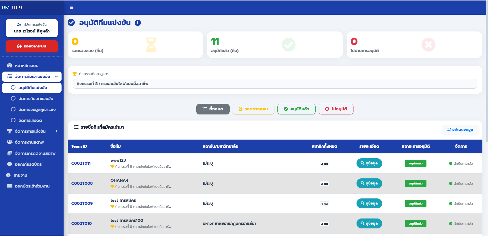
Team Approval
โมดูลตรวจสอบเอกสารที่ออกแบบมาเพื่อลดภาระ Server โดยใช้ Client-side Pagination และ Filtering
ในการจัดการ Data Array ฝั่ง Front-end พร้อมเสริม UX ด้วย Draggable Modal (jQuery UI) และระบบ
File Preview (PDF/Image)
จุดเด่น (Core Logic): เมื่อผู้จัดการกด "อนุมัติ" (POST Request) ระบบ Back-end
จะไม่เพียงแค่อัปเดตสถานะ แต่จะ Trigger กระบวนการ Automated Account Provisioning
ทำการสุ่มรหัสผ่าน (Random Password Generation) สร้างบัญชีผู้ใช้ให้สมาชิกทุกคนในทีมทันที
พร้อมบูรณาการไลบรารี PHPMailer (SMTP) เพื่อส่งอีเมลแจ้ง Credentials
แจ้งไปยังผู้เข้าแข่งขันแบบอัตโนมัติ
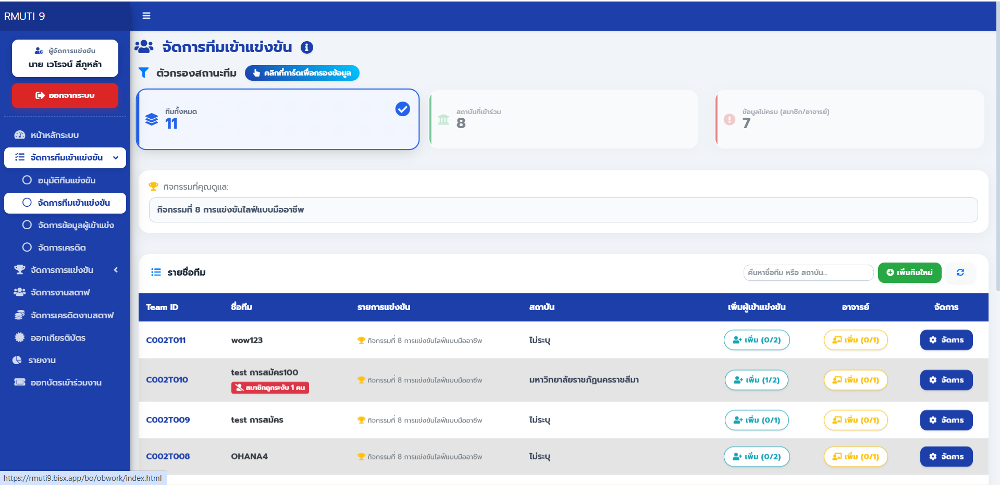
Advanced Team CRUD & Multi-Layer Validation
กลไกเชิงเทคนิคที่สำคัญ (Core Mechanics):
- Strict Quota Control: ระบบควบคุมโควตาสมาชิกและอาจารย์แบบ Real-time ดักจับตั้งแต่ฝั่ง Client-side (ใช้ JS Auto-cap จำกัดตัวเลขที่กรอก และ Disable ปุ่มเมื่อโควตาเต็ม) ไปจนถึงฝั่ง Server-side (PHP Query ตรวจสอบยอด Active Member ก่อน Insert)
- Safe Relational Delete: ยกระดับความปลอดภัยในการลบข้อมูล (Delete Operation) ด้วย Dependency Check ระบบจะปฏิเสธการลบทีมทันที หากตรวจพบว่าทีมนั้นยังมีสมาชิกอยู่ หรือมีความสัมพันธ์กับตารางผลการแข่งขัน เพื่อป้องกันปัญหา Foreign Key Error และ Data Loss
- Dynamic Input Interception: ใช้ Regular Expression (Regex) ดักจับและปฏิเสธอักขระพิเศษแบบ Real-time พร้อมสร้าง Custom Autocomplete ค้นหารายชื่อสถาบันจาก JSON API และระบบปรับเปลี่ยน Form Input อัตโนมัติ (ซ่อน/แสดงช่องอัปโหลดไฟล์ตาม Role ของผู้เข้าแข่ง)
- Smart Data Filtering: ลดภาระฝั่ง Server ด้วยการประมวลผล Array ฝั่ง Front-end เช่น การคำนวณหา "ทีมที่ข้อมูลไม่ครบ" (Incomplete Teams) โดยอิงจากเงื่อนไขความต่างระหว่างจำนวนสมาชิกจริงกับโควตาที่รายการกำหนด
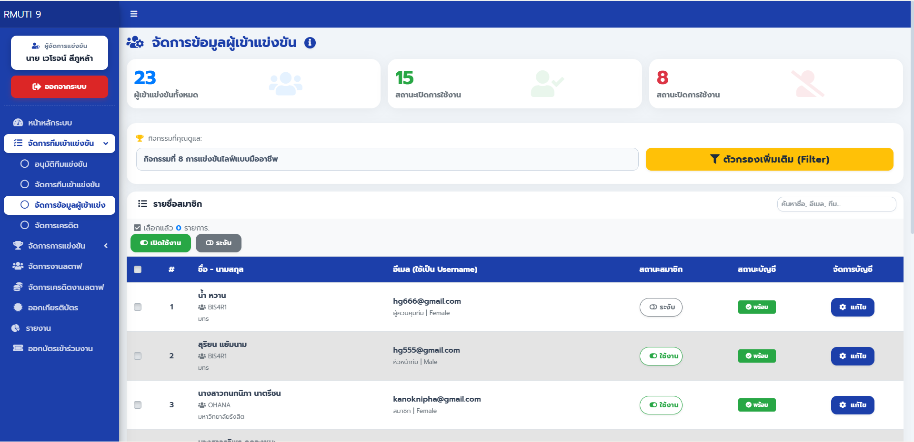
Participant & Account Management
กลไกเชิงเทคนิคที่สำคัญ (Core Mechanics):
- Advanced Multi-Criteria Filtering:
ระบบคัดกรองข้อมูลขั้นสูงแบบหลายเงื่อนไข (ทีม, สถาบัน, บทบาท, เพศ, สถานะ) โดยใช้ AJAX
ดึงตัวเลือก Dropdown จากฐานข้อมูลแบบ Dynamic (แสดงเฉพาะข้อมูลที่มีจริงในกิจกรรมนั้นๆ)
ผสานการทำงานร่วมกับ Backend API ที่ประกอบ SQL Query ด้วย Dynamic
WHEREClause ช่วยให้จัดการข้อมูลจำนวนมากได้อย่างมีประสิทธิภาพ - Smart Status & Quota Interception: อัลกอริทึมตรวจสอบโควตาระดับ Backend (PHP) ป้องกันการเปิดสถานะใช้งาน (Active) ทะลุลิมิต โดยแยกลอจิกการคำนวณโควตาระหว่าง "ผู้เข้าแข่งขัน" และ "ผู้ควบคุมทีม" อย่างเด็ดขาด พร้อมรองรับการเช็คโควตาระหว่างทำรายการแบบกลุ่ม (Batch Status Update)
- Batch Operations & Debounced Search: รองรับการอัปเดตสถานะแบบกลุ่มผ่าน Floating Toolbar ที่ตอบสนองตามขนาดหน้าจอ (Responsive) และเพิ่มประสิทธิภาพช่องค้นหาด้วยเทคนิค Debouncing (500ms Delay) เพื่อลดภาระ (Load) การยิง API ซ้ำซ้อนไปยัง Server
- Cascading & Reactive UI: ฟอร์มแก้ไขข้อมูลที่ทำงานแบบ Reactive เช่น ระบบที่อยู่แบบ Cascading Dropdown (ดึงข้อมูล Location จาก JSON API) และการซ่อน/แสดงฟิลด์ระบุการแพ้อาหารตามเงื่อนไข พร้อมระบบ Reset Password จากฝั่งผู้ดูแลระบบ
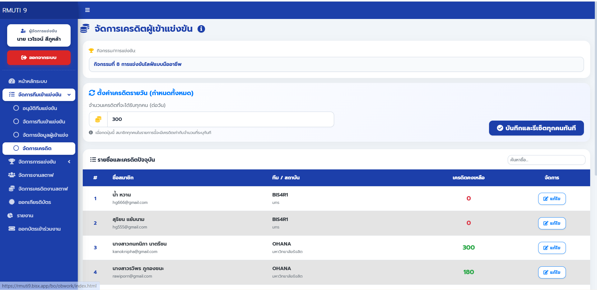
Virtual Credit System & State-Dependent Updates
กลไกเชิงเทคนิคที่สำคัญ (Core Mechanics):
- State-Dependent Operations: สถาปัตยกรรม Backend
มีการบังคับใช้เงื่อนไข (Strict Constraint) ผ่าน SQL
INNER JOINเพื่ออัปเดตเครดิตเฉพาะสมาชิกที่สังกัดทีมสถานะ'Approved'เท่านั้น ป้องกันการแก้ไขข้อมูลข้ามสถานะอย่างเด็ดขาด - Row-Affected Validation: Backend API ใช้เมธอด
rowCount()ของ PDO เพื่อตรวจสอบและแยกแยะผลลัพธ์ระดับ Transaction อย่างแม่นยำ (เช่น อัปเดตสำเร็จ, ค่าซ้ำไม่มีการเปลี่ยนแปลง, หรือถูกบล็อกเพราะทีมยังไม่อนุมัติ) - Dual-Mode Batch Processing: รองรับ RESTful
PUTRequest ที่สามารถสลับโหมดการทำงานได้ตาม Payload สามารถสั่งรีเซ็ตเครดิตทุกคนใน 1 กิจกรรม - Client-Side Optimization: ประมวลผลระบบค้นหา (Real-time Search) และแบ่งหน้าตาราง (Pagination) โดยการจัดการ Array ฝั่ง Front-end เพื่อให้ UI ตอบสนองได้ทันทีและลดจำนวน Request ที่ไม่จำเป็นไปยัง Server
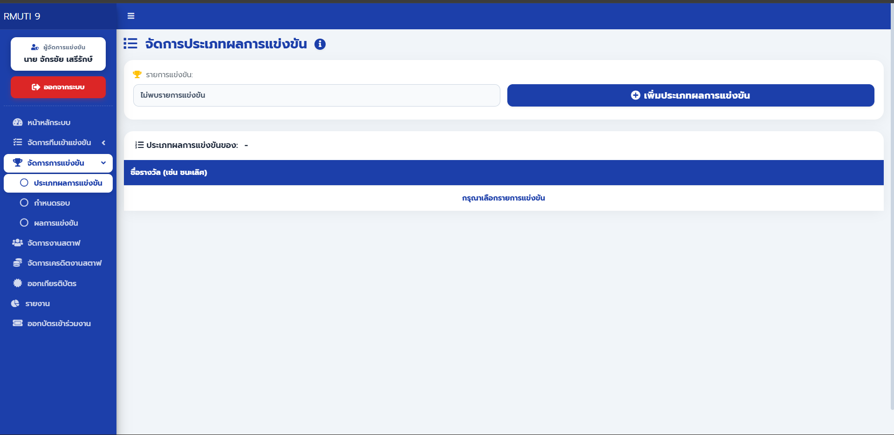
Competition Result Schema & Batch Management
- Interactive Sortable UI: บูรณาการ jQuery UI (Sortable)
เพื่อรองรับการจัดลำดับความสำคัญของรางวัลด้วยการลากวาง (Drag & Drop) โดยระบบจะมีฟังก์ชัน
reorderCodes()ทำหน้าที่ Re-indexing รหัสอ้างอิง (Alphabetical Codes A-Z) ใหม่โดยอัตโนมัติในฝั่ง Client เพื่อความถูกต้องของข้อมูลก่อนการบันทึก - Transactional Batch Processing: สถาปัตยกรรม Backend (PHP) ใช้ระบบ Database Transactions (Begin/Commit/Rollback) ในการทำ Bulk Update และ Overwrite ข้อมูล เพื่อรักษาความสมบูรณ์ของข้อมูล (Data Integrity) ในกรณีที่มีการจัดการ Schema รางวัลจำนวนมากในคราวเดียว
- Dual-Mode Data Entry: รองรับทั้งระบบ Append (เพิ่มต่อท้าย) และ Re-initialization (ล้างและสร้างใหม่) พร้อมระบบ Dynamic Input Generation ที่สามารถสร้างช่องกรอกข้อมูลตามจำนวนที่ผู้ใช้ระบุ และทำ Smart Filtering คัดกรองค่าว่างทิ้งก่อนส่งไปยัง Database API
- State-Dependent UI Control: จัดการหน้าจอด้วยสถานะ
isEditModeเพื่อควบคุมการแสดงผลของ UI Elements เช่น การเปิด-ปิดช่อง Input, การสลับปุ่มดำเนินการ และการเปิดสิทธิ์การ Drag & Drop แบบ Asynchronous ตามสิทธิ์ของผู้ใช้งาน
Round Scheduling & Temporal Workflow Management
- Interactive Sequence Control: พัฒนา UI
ให้รองรับการจัดลำดับรอบการแข่งขันแบบ Drag & Drop ผ่าน jQuery UI บูรณาการร่วมกับฟังก์ชัน
reorderCodes()เพื่อทำ Client-side Re-indexing หมายเลขรอบแบบอัตโนมัติ ช่วยให้ผู้จัดการปรับเปลี่ยนแผนการแข่งได้ทันทีโดยไม่ต้องแก้ไขทีละรายการ - Atomic Batch Operations: Backend API ออกแบบโดยใช้ Database Transactions (PDO) เพื่อจัดการข้อมูลแบบกลุ่ม (Bulk Overwrite) ทำให้การล้างข้อมูลรอบเก่าและบันทึกโครงสร้างใหม่เป็นไปอย่างเบ็ดเสร็จ (Atomic) ป้องกันปัญหาข้อมูลค้างหรือโครงสร้างลำดับผิดเพี้ยนหากเกิด Error ระหว่างประมวลผล
- Temporal Management: ระบบรองรับการกำหนดช่วงเวลาเริ่มต้น-สิ้นสุด (Start/End DateTime) ในแต่ละรอบการแข่งขัน ผ่าน HTML5 DateTime Object พร้อม Logic การจัดการค่า NULL ในระดับ Database เพื่อรองรับรอบการแข่งขันที่ยังไม่ระบุเวลาแน่นอน
- Relational Guardrails: ยกระดับความปลอดภัยของข้อมูลด้วยระบบดักจับ Integrity Constraint Violation หากรอบการแข่งขันนั้นๆ มีความสัมพันธ์กับข้อมูลคะแนนหรือผลการแข่งไปแล้ว ระบบจะบล็อกการลบหรือแก้ไขเชิงโครงสร้างเพื่อป้องกัน Data Inconsistency
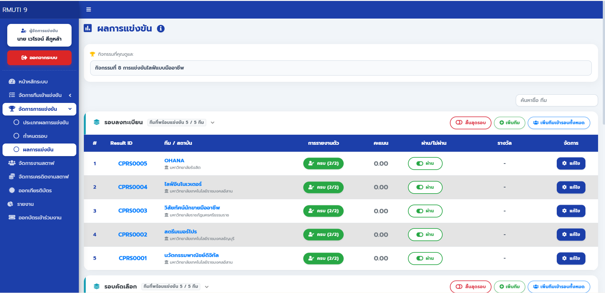
Complex Result Engine & Member Synchronization
กลไกเชิงเทคนิคที่สำคัญ (Core Mechanics):
- Asynchronous Data Aggregation: ระบบดึงข้อมูลจากหลาย Endpoint (Competitions, Rounds, Results) มาประมวลผลและ Aggregation ฝั่ง Client เพื่อสร้าง Nested Accordion UI ที่รองรับการแสดงผลแยกตามรอบการแข่งขันได้อย่างอิสระ
- Automated Member Synchronization: ไฮไลท์สำคัญอยู่ที่ Logic หลังบ้าน
(Backend) ในฟังก์ชัน
syncMembersToCheckTableซึ่งจะทำการคัดกรองสมาชิกที่มีสถานะ Active เพื่อสร้าง Record ในตาราง Check-in อัตโนมัติทันทีที่มีการเพิ่มทีมเข้าสู่รอบการแข่งขัน เพื่อรองรับระบบเช็คชื่อหน้างาน (Check-in Toggle) - Optimistic UI & Quick-Action Toggles: พัฒนาระบบให้ตอบสนองไวด้วยเทคนิค Optimistic Update เช่นการสลับสถานะ "ผ่าน/ไม่ผ่าน" (Pass/Fail Toggle) ผ่าน AJAX Request ที่จะอัปเดต UI ทันทีโดยไม่ต้องโหลดหน้าใหม่ พร้อมระบบลัด (Shortcut) อย่าง Double-click Interaction เพื่อเรียกใช้ Scoring Modal
- Advanced Search & Auto-Expansion Logic: ระบบค้นหาที่ไม่ได้แค่กรองข้อมูล แต่มี
Logic ในการสั่ง
collapse('show')เพื่อกาง Accordion ของรอบการแข่งขันที่ทีมนั้นๆ ซ่อนอยู่โดยอัตโนมัติ ช่วยลดจำนวน Click และเพิ่มความเร็วในการทำงาน (UX Efficiency)
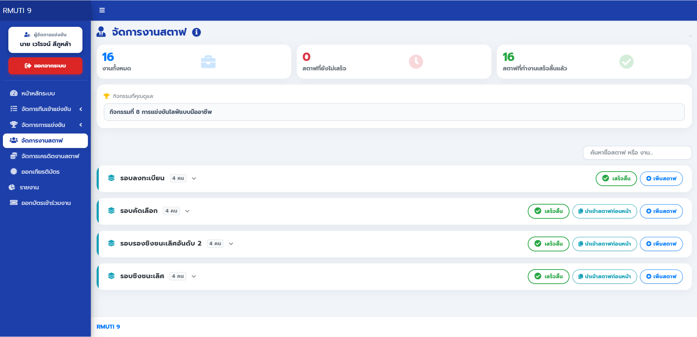
Staff Task Orchestration & Workflow Automation
- Relational Task Mapping: สถาปัตยกรรมระบบมอบหมายงานที่เชื่อมโยงความสัมพันธ์ระหว่าง "เจ้าหน้าที่ (Staff Profile)" และ "รอบการแข่งขัน (Competition Round)" อย่างสมบูรณ์ ช่วยให้ผู้จัดการสามารถแจกจ่ายและติดตามงานแยกตามลำดับความสำคัญและช่วงเวลาได้อย่างแม่นยำ
- Smart Data Import Engine: ไฮไลท์เชิง Logic คือระบบ
Import Previous Staffที่ใช้กระบวนการดึงข้อมูลจากรอบก่อนหน้า (Deep Copy) มาจัดทำเป็นชุดคำสั่งINSERTใหม่ไปยังรอบปัจจุบันผ่าน Backend API ช่วยลดความซ้ำซ้อนในการกรอกข้อมูล (Redundancy Reduction) และเพิ่มประสิทธิภาพในการตั้งค่าระบบได้ทันที - Asynchronous Task Tracking: พัฒนาหน้าจอแสดงผลด้วย Dynamic Accordion ที่ผสานสถานะการทำงาน (Work Progress) เข้ากับระบบ Real-time Counters โดยใช้เทคนิค AJAX ในการอัปเดตสถานะงานรายบุคคล (Done/Pending) เพื่อรายงานความคืบหน้าของทีมงานเบื้องหลังในทุกมิติ
- Optimized Data Interaction: บูรณาการ Select2 Library เพื่อจัดการฐานข้อมูลเจ้าหน้าที่จำนวนมาก และใช้เทคนิค Real-time Row Filtering ในการค้นหาหน้าที่งาน พร้อมระบบจัดการผ่าน Floating Action Menu ที่ช่วยลดความซับซ้อนของหน้าจอ (UI Cleanup) ขณะปฏิบัติงาน
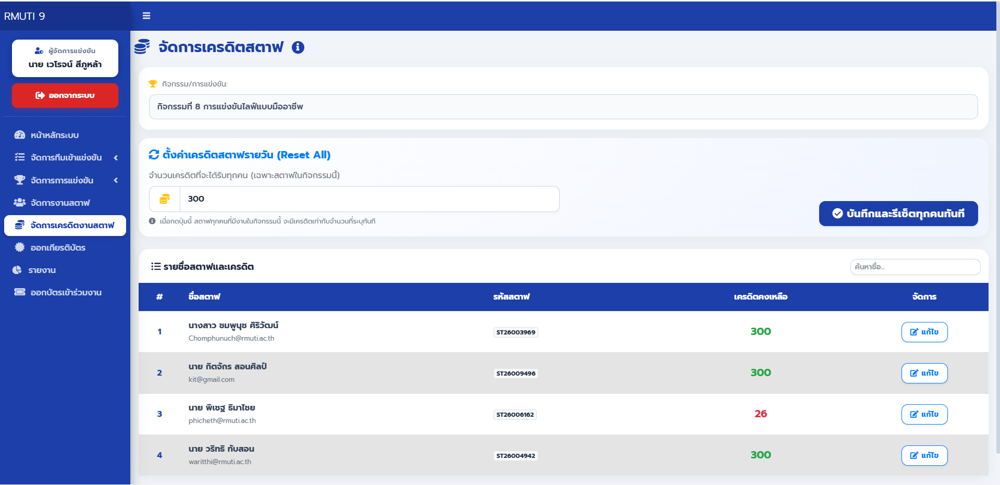
Staff Incentive & Credit Resource Management
- Context-Aware Data Fetching: Backend API ใช้
INNER JOINร่วมกับDISTINCTเพื่อดึงข้อมูลเจ้าหน้าที่เฉพาะที่มีประวัติการได้รับมอบหมายงานในกิจกรรมนั้นๆ (Relational Filtering) เพื่อให้มั่นใจว่าผู้จัดการจะเข้าถึงเฉพาะข้อมูลสตาฟที่ปฏิบัติงานจริงในโครงการ - High-Efficiency Batch Reset: ระบบรองรับการทำ Mass Credit Reset
ผ่านคำสั่ง SQL
UPDATEที่ผสานลอจิกINNER JOINไว้ในคำสั่งเดียว ช่วยให้การปรับยอดเครดิตสตาฟทั้งโครงการเกิดขึ้นได้ภายใน 1 Transaction ซึ่งช่วยลดภาระการทำงานของฐานข้อมูลได้อย่างมีประสิทธิภาพ - Asynchronous Credit Adjustment:
การจัดการเครดิตทั้งแบบรายบุคคลและแบบกลุ่มทำงานผ่าน Asynchronous Requests โดยใช้
rowCount()ในการตรวจสอบสถานะการเปลี่ยนแปลงข้อมูลในระดับ Database เพื่อความแม่นยำในการตอบสนองของระบบ - Client-Side Search Optimization: พัฒนาระบบค้นหาแบบ Real-time ด้วยการทำ Row Filtering บนตารางข้อมูลฝั่ง Client-side ช่วยให้ผู้ใช้สามารถค้นหาเจ้าหน้าที่จากฐานข้อมูลจำนวนมากได้ทันทีโดยไม่ต้องยิง Request ไปยัง Server ซ้ำซ้อน
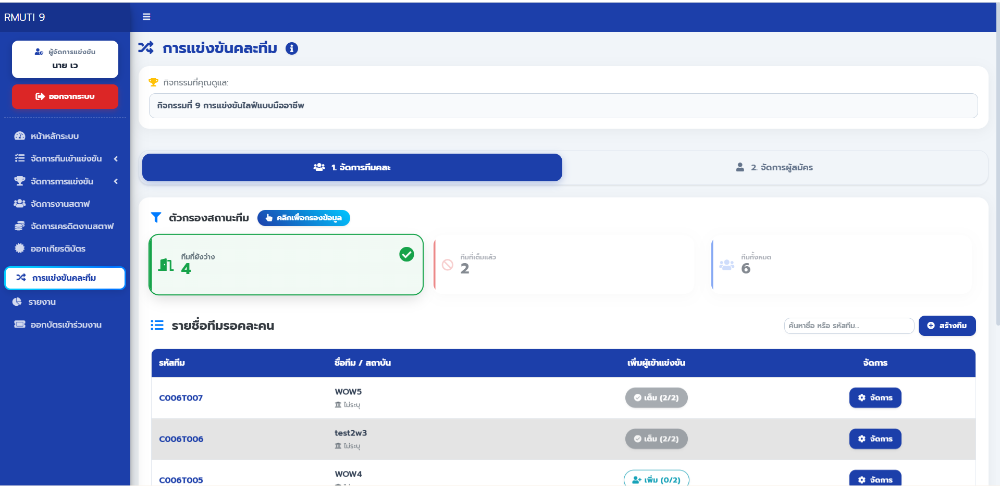
Guided Team Formation & Cross-Institutional Management
กลไกเชิงเทคนิคที่สำคัญ (Core Mechanics):
- Guided Manual Assignment: ระบบช่วยอำนวยความสะดวกในการจัดทีมแบบแมนนวล ผู้จัดการสามารถพิจารณาข้อมูลและกดสั่งย้ายผู้สมัครเดี่ยว (Solo Participants) เข้าสู่ทีมที่ต้องการได้โดยตรงผ่านเมนูลัด (Action Menu) ทำให้การคละสถาบันเป็นไปอย่างแม่นยำตามการตัดสินใจของผู้คุม
- Dual-Pane Sync Architecture: ออกแบบหน้าต่างการทำงานแบ่งเป็น 2 ฝั่ง (Participant Pool และ Mixed Team List) ที่ทำงานสอดประสานกัน มาพร้อมระบบค้นหาที่แยกการทำงานอิสระ (Independent Search) ช่วยให้ค้นหารายชื่อจากผู้สมัครหลักร้อยคนได้อย่างรวดเร็ว
- Dynamic Capacity & Constraint Checks: มีระบบคำนวณโควตาสมาชิก (Capacity Limit) และแจ้งเตือนพื้นที่ว่างของแต่ละทีมแบบ Real-time ผสานกับระบบดักจับ (Validation) ทั้งฝั่ง Client และ Server เพื่อบล็อกการเพิ่มคนเข้าทีมที่เต็มแล้วแบบอัตโนมัติ ป้องกันความผิดพลาดจากการทำงาน (Human Error)
- Secure Database Transactions: ภายใต้การกดสั่งงานผ่าน UI ระบบหลังบ้านมีการใช้สถาปัตยกรรม PDO Transactions (Begin/Commit/Rollback) ในการประมวลผลการสร้างทีม แก้ไขชื่อ และย้ายสมาชิก เพื่อการันตีความสมบูรณ์ของข้อมูล (Data Integrity) ในทุกๆ รายการ
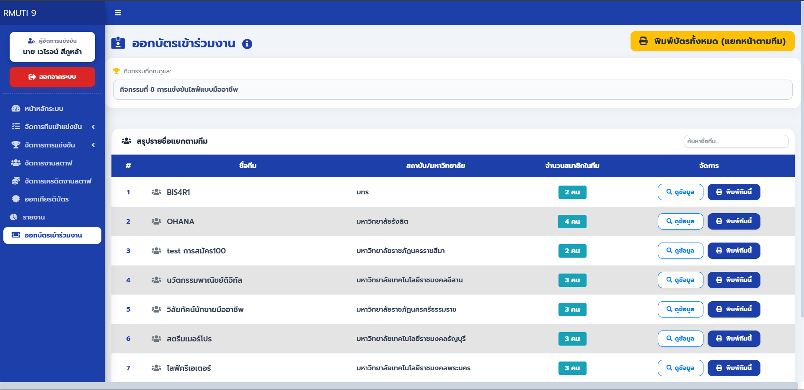
Badge Issuance & Print Automation
กลไกเชิงเทคนิคที่สำคัญ (Core Mechanics):
- Print-Specific CSS Architecture: ใช้เทคนิคการควบคุมการเรนเดอร์หน้ากระดาษสำหรับการพิมพ์โดยเฉพาะ ระบบจะทำการซ่อน UI ของ Web App ทั้งหมดชั่วคราว และใช้โครงสร้าง Flexbox เข้ามาควบคุมพื้นที่แสดงผลเพื่อล็อกเลย์เอาต์ (Grid Layout) ให้ออกมาจัดเรียงพอดีกับหน้ากระดาษ A4 ป้องกันปัญหาหน้าเว็บพังเมื่อสั่งพิมพ์
- Dynamic QR Code Integration: บูรณาการ API เพื่อประมวลผลและสร้าง QR Code ประจำตัวผู้เข้าแข่งขันแต่ละคนแบบ Real-time (On-the-fly) โดยดึงข้อมูลรหัสอ้างอิงประจำตัวผู้สมัครแบบเข้ารหัส เพื่อเตรียมพร้อมสำหรับการนำไปสแกนใช้งานกับระบบ Check-in หน้างาน
- Client-Side Data Grouping: เพิ่มประสิทธิภาพระบบด้วยการดึงข้อมูลรายชื่อทั้งหมดมาทำ Data Aggregation และจัดกลุ่มตามสังกัดทีม (Group by Team) ในฝั่ง Front-end ทำงานร่วมกับระบบแบ่งหน้า (Pagination) และค้นหาข้อมูล เพื่อให้ UI โหลดและตอบสนองได้อย่างรวดเร็ว
- Virtual Print Spooling: รองรับโหมดการพิมพ์ที่ยืดหยุ่น (พิมพ์แยกทีม / พิมพ์ทั้งหมด) โดยระบบจะทำการสร้างโครงสร้างบัตรขึ้นมาใหม่ชั่วคราว (Virtual DOM Injection) ไว้ในคอนเทนเนอร์เบื้องหลัง ก่อนจะส่งคำสั่งประมวลผลไปยังระบบพิมพ์ของเบราว์เซอร์อัตโนมัติ ทำให้ได้เอกสารที่สะอาดตาและสมบูรณ์
โมดูลฝั่งผู้ดูแลระบบ (Admin)
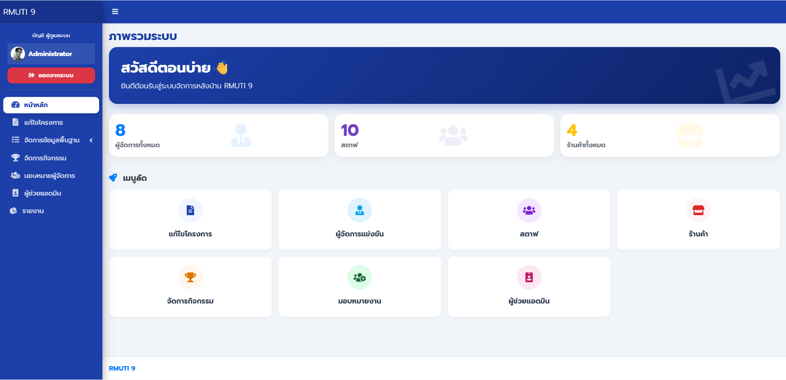
Admin Dashboard
รายละเอียดการทำงาน (Technical Details):
- Asynchronous API Requests: ใช้ jQuery
$.get()ยิงรีเควสไปหา API หลายๆ เส้นพร้อมกัน (Manager, Staff, Merchant) เพื่อโหลดตัวเลขสถิติแยกกัน ทำให้หน้าเว็บแสดงผลได้เร็วขึ้นโดยไม่ต้องรอ API ตัวใดตัวหนึ่งโหลดเสร็จ - Error Handling: มีการเขียนดักจับ Error (ใช้
.fail()) ไว้ในทุกๆ API Request หากมีเส้นไหนล่มหรือโหลดไม่ติด ระบบจะแสดงเครื่องหมาย '-' แทนตัวเลข เพื่อป้องกันไม่ให้สคริปต์หยุดทำงานและหน้าเว็บพัง - Dynamic Greeting: เขียน JS ดึงเวลาปัจจุบันจากเครื่องผู้ใช้งาน (Client-side) มาเช็คเงื่อนไข เพื่อเปลี่ยนคำทักทายบนหน้าเว็บ (เช้า/บ่าย/เย็น) อัตโนมัติ
- Responsive UI: ส่วนเมนูทางลัด (Shortcut) มีการเขียน CSS จัด Layout ไว้แบบยืดหยุ่น รองรับการเปิดใช้งานทั้งบนหน้าจอคอมพิวเตอร์และมือถือ
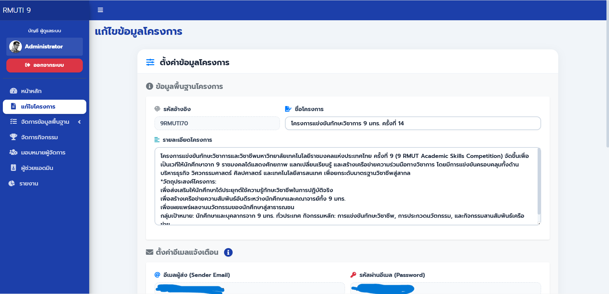
Project Settings & Configuration
รายละเอียดการทำงาน (Technical Details):
- Multipart Data Processing: รองรับการแก้ไขข้อมูลแบบ Text
และการอัปโหลดไฟล์ (PDF/Word) ไปพร้อมกันด้วย
FormDataฝั่ง Backend (PHP) มีฟังก์ชันตรวจจับไฟล์ อัปโหลดพร้อมเปลี่ยนชื่อด้วย Timestamp เพื่อป้องกันไฟล์ซ้ำ และเก็บเฉพาะ Relative Path ลงฐานข้อมูล - Accidental Edit Protection: เพิ่มความปลอดภัยให้ข้อมูลสำคัญ เช่น
ข้อมูลบัญชีอีเมล (App Password) โดยตั้งค่า Input ให้เป็น Readonly ควบคู่กับการเขียน JS
Event
dblclickหากต้องการแก้ไขต้อง "ดับเบิลคลิก" เพื่อปลดล็อกเท่านั้น พร้อมแสดง Toast Notification แจ้งเตือน - DateTime Normalization: มีลอจิกการจัดรูปแบบข้อมูล (Data Formatting)
โดยแปลงวันที่และเวลาที่รับมาจากฝั่ง Front-end (HTML5 datetime-local) ให้เป็นฟอร์แมต
Y-m-d H:i:sก่อนอัปเดตลง MySQL เพื่อป้องกัน Date-format Error - Dynamic Data Binding: ใช้
URLSearchParamsดึงค่า ID โครงการจาก URL Param มายิง API ขอข้อมูล (GET Request) เพื่อนำมา Binding แสดงผลบนฟอร์มให้พร้อมสำหรับการแก้ไขแบบอัตโนมัติ
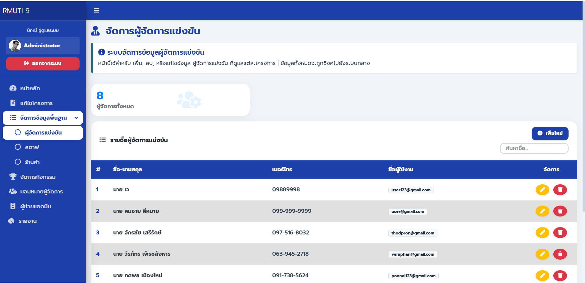
Managers Management (CRUD)
รายละเอียดการทำงาน (Technical Details):
- Context-Aware Data Binding: ลอจิกหลังบ้านถูกออกแบบให้ดึงรหัสโครงการที่กำลังเปิดใช้งานอยู่ (Active Project) มาผูกกับบัญชีผู้จัดการที่ถูกสร้างใหม่โดยอัตโนมัติ เพื่อป้องกันปัญหาข้อมูลขาดความสัมพันธ์ และลดภาระการกรอกข้อมูลของผู้ดูแลระบบ
- Secure Password Handling: ระบบหลังบ้านรองรับการรับส่งข้อมูลหลายรูปแบบ (JSON/FormData) พร้อมกระบวนการเข้ารหัสรหัสผ่านแบบทางเดียว (Bcrypt Hashing) และเขียนลอจิกฟอร์มให้สามารถแก้ไขข้อมูลทั่วไปได้โดยไม่บังคับเปลี่ยนรหัสผ่าน
- Real-time Client-Side Search: ระบบค้นหารายชื่อทำงานผ่านการกรองข้อมูลบนหน้าจอ (DOM Filtering) ด้วย JavaScript ทันทีที่มีการพิมพ์ ทำให้ผู้ใช้สามารถค้นหาข้อมูลหลักร้อยรายการได้รวดเร็วโดยไม่ต้องร้องขอข้อมูลใหม่จากเซิร์ฟเวอร์
- Dynamic Data Aggregation: มีฟังก์ชันอัปเดตตัวเลขสถิติด้านบนของหน้าจอ โดยใช้ลอจิกของ JavaScript ในการจัดการ Array คัดกรองข้อมูลที่ไม่ซ้ำกัน (Distinct) เพื่อคำนวณจำนวนโปรเจกต์ที่กำลังทำงานอยู่แบบ Real-time
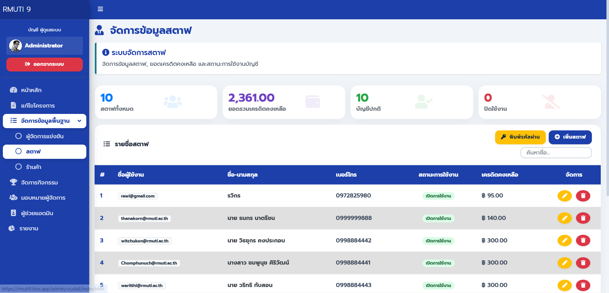
Staff Management (CRUD)
รายละเอียดการทำงาน (Technical Details):
- Algorithmic ID Generation: ระบบสร้างรหัสประจำตัวเจ้าหน้าที่อัตโนมัติฝั่ง Backend โดยใช้ลอจิกการประกอบค่าระหว่าง ปีปัจจุบัน, ลำดับการสมัคร (Sequence Number) ที่ดึงจากฐานข้อมูล และชุดตัวอักษรแบบสุ่ม เพื่อให้ได้รหัสที่เป็นมาตรฐานและป้องกันการซ้ำซ้อน (Data Duplication) ขั้นเด็ดขาด
- Secure Authentication Handling: ระบบจัดการข้อมูลบัญชีที่มีกระบวนการเข้ารหัสผ่านแบบทางเดียว (One-way Hashing) และถูกออกแบบให้ฟอร์มแก้ไขข้อมูลมีความยืดหยุ่น ผู้ดูแลระบบสามารถอัปเดตประวัติทั่วไปหรือปรับสถานะบัญชี (Active/Inactive) ได้โดยไม่บังคับให้ต้องรีเซ็ตรหัสผ่านใหม่
- Real-time Data Aggregation: ประยุกต์ใช้ฟังก์ชันจัดการ Array ฝั่ง Client-side ในการประมวลผลและคำนวณข้อมูลสถิติ เช่น การหายอดรวมเครดิตของสตาฟทั้งระบบ และการคัดกรองนับจำนวนบัญชีที่เปิดใช้งานอยู่ เพื่ออัปเดตตัวเลขบนหน้าจอ (Dashboard Stats) แบบ Real-time
- Client-Side Search Optimization: ลดภาระการทำงานของเซิร์ฟเวอร์ด้วยระบบค้นหารายชื่อแบบ On-page Filtering ที่ทำงานผ่าน JavaScript ทันทีเมื่อผู้ใช้พิมพ์ข้อความ ช่วยให้การเข้าถึงข้อมูลเจ้าหน้าที่หลักร้อยคนเป็นไปอย่างรวดเร็วและไร้รอยต่อ
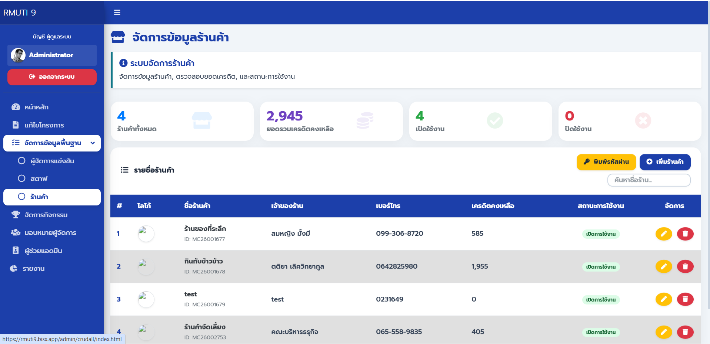
merchant Management (CRUD)
รายละเอียดการทำงาน (Technical Details):
- Multipart File Uploads: ออกแบบระบบรับส่งข้อมูลแบบ
FormDataเพื่อจัดการอัปโหลดไฟล์รูปภาพโลโก้ร้านค้าไปพร้อมกับข้อมูลทั่วไป โดยฝั่ง Backend มีลอจิกจัดการเปลี่ยนชื่อไฟล์ใหม่ด้วย Timestamp เพื่อป้องกันชื่อไฟล์ซ้ำ และจัดเก็บเฉพาะเส้นทางไฟล์ (Relative Path) เพื่อประสิทธิภาพของฐานข้อมูล - HTTP Method Spoofing: ประยุกต์ใช้เทคนิคจำลองเมธอด (Method Spoofing)
ในการส่งฟอร์มแก้ไขข้อมูลที่มีไฟล์แนบ เพื่อข้ามขีดจำกัดของเซิร์ฟเวอร์ในการอ่าน
multipart/form-dataทำให้ระบบสามารถอัปเดตไฟล์ได้โดยยังคงรักษาโครงสร้าง API ตามมาตรฐาน RESTful - Secure Authentication: ระบบจัดการบัญชีร้านค้ามีการเข้ารหัสผ่านแบบทางเดียว (One-way Hashing) และแยกลอจิกการอัปเดตข้อมูลทั่วไปออกจากการแก้ไขรหัสผ่าน เพื่อให้ผู้ดูแลสามารถปรับปรุงข้อมูลร้านได้โดยไม่กระทบกับรหัสผ่านเดิม
- Client-Side Aggregation: ประมวลผลและอัปเดตสถิติภาพรวม (เช่น ยอดรวมพอยต์ของทุกร้านค้า) แบบ Real-time บนหน้าจอด้วย JavaScript Array Methods ควบคู่กับระบบค้นหารายชื่อแบบกรองข้อมูลหน้าเว็บ (DOM Filtering) ช่วยให้ระบบตอบสนองอย่างรวดเร็ว
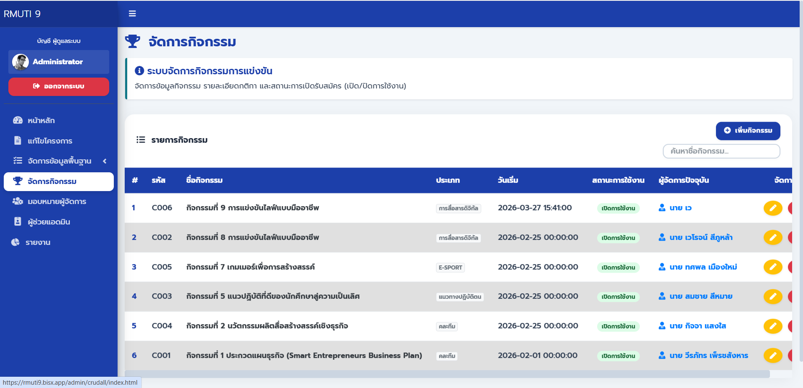
Competition Management
รายละเอียดการทำงาน (Technical Details):
- Multipart Data & Method Spoofing: สถาปัตยกรรมหลังบ้านรองรับการรับส่งข้อมูลฟอร์มแบบซับซ้อนร่วมกับไฟล์เอกสาร โดยใช้เทคนิคจำลอง HTTP Method เพื่อข้ามข้อจำกัดการอัปเดตไฟล์แบบปกติ ทำให้ระบบสามารถจัดการข้อมูลพร้อมไฟล์แนบได้โดยยังคงโครงสร้าง RESTful API ไว้ได้อย่างสมบูรณ์
- Dynamic Resource Fetching: ยกระดับ UI ด้วยการบูรณาการไลบรารีจัดการ Dropdown เข้ากับระบบดึงข้อมูลแบบ Asynchronous (ทั้งจาก Database API และไฟล์โครงสร้าง JSON) เพื่อสร้างตัวเลือกหมวดหมู่และระดับการศึกษาแบบอัตโนมัติ ช่วยป้องกันการกรอกข้อมูลผิดพลาด (Data Validation)
- Context-Aware Relational Binding: ลอจิกหลังบ้านถูกออกแบบให้สามารถประมวลผลและจัดการความสัมพันธ์ของข้อมูล (Foreign Keys) เช่น การกำหนดผู้ดูแลกิจกรรม และรหัสโครงการ ได้อย่างยืดหยุ่น พร้อมระบบคัดกรองค่าว่าง (Strict Null Handling) ที่รัดกุมเพื่อรักษาความสมบูรณ์ของฐานข้อมูล
- Strict State Management: ฝั่งหน้าบ้าน (Client-side) มีกลไกดักจับและล้างสถานะข้อมูลเชิงลึกแบบ 100% ทุกครั้งที่มีการเรียกหน้าต่างสร้างกิจกรรมใหม่ เพื่อป้องกันปัญหาข้อมูลตกค้าง (Data Overlap) จากฟอร์มก่อนหน้า ผสานกับระบบคำนวณสถิติสถานะกิจกรรมแบบ Real-time
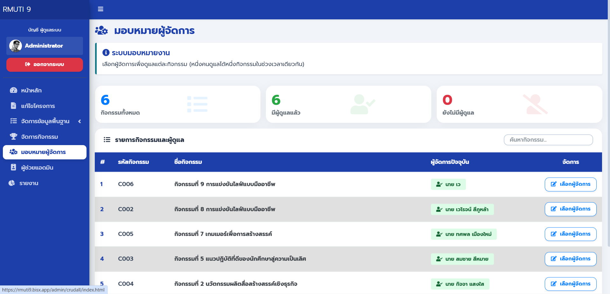
Assign Managers
รายละเอียดการทำงาน (Technical Details):
- Smart Resource Allocation: ฝั่ง Front-end มีอัลกอริทึมตรวจสอบสถานะการทำงาน (Workload Checking) โดยนำข้อมูลกิจกรรมทั้งหมดมา Cross-check กับรายชื่อผู้จัดการ เพื่อคัดกรองและสร้างตัวเลือก Dropdown เฉพาะ "ผู้จัดการที่ยังไม่ได้รับมอบหมายงาน" เท่านั้น ป้องกันปัญหาการจัดคนซ้ำซ้อน (Double Assignment)
- Strict Null State Handling: สถาปัตยกรรม Backend
ถูกออกแบบมาให้รองรับการ "ถอดถอนสิทธิ์" (Unassign) อย่างปลอดภัย
โดยมีลอจิกดักจับและแปลงค่าจากฝั่ง Client (เช่น ค่าว่าง หรือ String คำว่า "null")
ให้กลายเป็นค่า
NULLในระดับ Database อย่างรัดกุม เพื่อไม่ให้กระทบกับ Foreign Key Constraint - State-Preserving UI: ลอจิกหน้าบ้านถูกเขียนให้จดจำและแสดงชื่อของผู้จัดการ "คนปัจจุบัน" ที่ดูแลกิจกรรมนั้นๆ เอาไว้ให้เลือกได้เสมอ (แม้จะถูกกรองออกด้วยเงื่อนไขคนว่าง) ทำให้การเปลี่ยนมือผู้ดูแล หรือการยืนยันผู้ดูแลเดิม ทำงานได้อย่างไม่ติดขัด
- Client-Side DOM Filtering: ระบบค้นหาข้อมูลกิจกรรมใช้วิธีการกรองข้อความและควบคุมการแสดงผลของตารางผ่าน JavaScript (DOM Filtering) แบบ Real-time ทันทีที่พิมพ์ข้อความ ช่วยลดภาระการร้องขอข้อมูลซ้ำซ้อนไปยังเซิร์ฟเวอร์
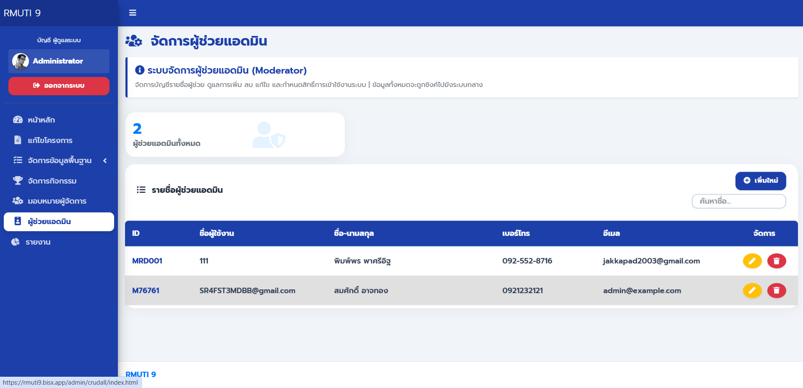
Admin Assistants (Role & Access Control)
รายละเอียดการทำงาน (Technical Details):
- Session-Based API Authorization: สถาปัตยกรรม Backend มีการวางระบบรักษาความปลอดภัย (Security Guard) เพื่อตรวจสอบสิทธิ์เซสชัน (Session) ในระดับ API ก่อนเริ่มประมวลผล หากคำขอไม่มีสิทธิ์ระดับ Admin ระบบจะปฏิเสธการทำงานและส่งสถานะ Unauthorized ทันที ป้องกันการเข้าถึงผ่านช่องทางอื่น (API Bypass)
- Dynamic Query & Secure Hashing: ลอจิกการแก้ไขข้อมูลหลังบ้านถูกออกแบบให้สร้างชุดคำสั่ง SQL แบบยืดหยุ่น (Dynamic Query Building) โดยระบบจะประมวลผลอัปเดตเฉพาะฟิลด์ที่มีการแก้ไขจริงเท่านั้น ผสานกับการเข้ารหัสผ่านแบบทางเดียว (One-way Hashing) ทำให้สามารถแก้ข้อมูลทั่วไปได้โดยไม่กระทบกับรหัสผ่านเดิม
- Advanced Data Grid Integration: ยกระดับการจัดการตารางข้อมูลด้วยไลบรารี Data Grid ที่ถูกปรับแต่ง (Customization) ลอจิกการทำงาน โดยแยกช่องค้นหา (Search Input) ออกมาผูกการทำงานกับ DOM ภายนอก ทำให้หน้าต่างผู้ใช้งาน (UI) ดูสะอาดตาและค้นหาข้อมูลได้รวดเร็วขึ้น
- Single-State Form Management: ออกแบบสถาปัตยกรรมหน้าบ้าน (Front-end) เพื่อลดความซ้ำซ้อนของโค้ด (Code Reusability) โดยใช้โครงสร้างฟอร์มเดียวกันในการประมวลผลทั้งการ "สร้าง" และ "แก้ไข" บัญชีผู้ใช้งาน ผ่านการควบคุมด้วยตัวแปรสถานะ (State Flag) ที่จะปรับเปลี่ยนลอจิกและข้อความบนหน้าจออัตโนมัติ